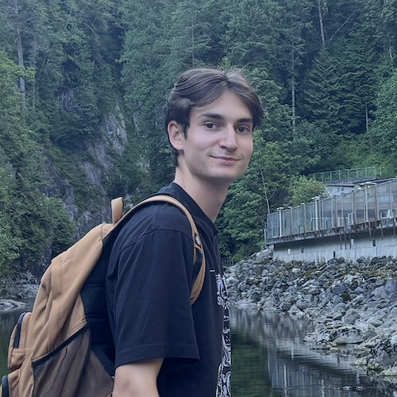

Home · Publications · Blog

Undergraduate Student, Cornell University
Email: ab3349 [at] cornell [dot] edu
LinkedIn · Twitter · GitHub · Google Scholar
My research interests lie in reinforcement learning and causality, with applications to language models.
October 2025. Our paper Test-Time Scaling for Multistep Reasoning in Small Language Models via A* Search was accepted to the LAW 2025 workshop at NeurIPS 2025 (with Weitong Zhang and Quanquan Gu).
Test-Time Scaling for Multistep Reasoning in Small Language Models via A* Search. A. Braverman, W. Zhang, Q. Gu. NeurIPS 2025 Workshop on Bridging Language, Agent, and World Models for Reasoning and Planning. [PDF]
Mitigating hallucination in large language models with explanatory prompting. A. Braverman, W. Zhang, Q. Gu. NeurIPS 2024 Workshop on Statistical Foundations of LLMs and Foundation Models. [PDF]
Toward Fast Query Serving in Key-Value Store Migration with Approximate Telemetry. A. Braverman, Z. Liu. SIGMETRICS Performance Evaluation Review, 51(2), 91–93, 2023. [DOI]